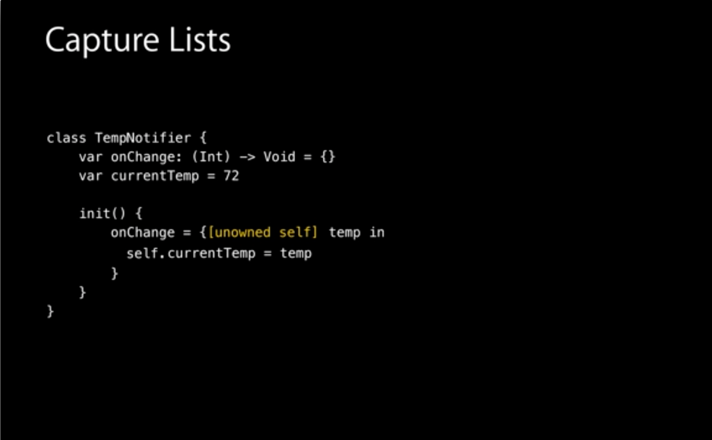

Shall we always use [unowned self] inside closure in Swift
In WWDC 2014 session 403 Intermediate Swift and transcript, there was the following slide

The speaker said in that case, if we don't use [unowned self] there, it will
be a memory leak. Does it mean we should always use [unowned self] inside
closure?
On line 64 of ViewController.swift of the Swift Weather app, I don't use
[unowned self]. But I update the UI by using some @IBOutlets like
self.temperature and self.loadingIndicator. It may be OK because all
@IBOutlets I defined are weak. But for safety, should we always use
[unowned self]?
class TempNotifier { var onChange: (Int) -> Void = {_ in } var currentTemp = 72 init() { onChange = { [unowned self] temp in self.currentTemp = temp } } }
Answer
No, there are definitely times where you would not want to use [unowned
self]. Sometimes you want the closure to capture self in order to make sure
that it is still around by the time the closure is called.
Example: Making an asynchronous network request
If you are making an asynchronous network request you do want the closure
to retain self for when the request finishes. That object may have otherwise
been deallocated but you still want to be able to handle the request
finishing.
When to use unowned self or weak self
The only time where you really want to use [unowned self] or [weak self]
is when you would create a strong reference cycle. A strong reference cycle is
when there is a loop of ownership where objects end up owning each other
(maybe through a third party) and therefore they will never be deallocated
because they are both ensuring that each other stick around.
In the specific case of a closure, you just need to realize that any variable
that is referenced inside of it, gets "owned" by the closure. As long as the
closure is around, those objects are guaranteed to be around. The only way to
stop that ownership, is to do the [unowned self] or [weak self]. So if a
class owns a closure, and that closure captures a strong reference to that
class, then you have a strong reference cycle between the closure and the
class. This also includes if the class owns something that owns the closure.
Specifically in the example from the video
In the example on the slide, TempNotifier owns the closure through the
onChange member variable. If they did not declare self as unowned, the
closure would also own self creating a strong reference cycle.
Difference between unowned and weak
The difference between unowned and weak is that weak is declared as an
Optional while unowned is not. By declaring it weak you get to handle the
case that it might be nil inside the closure at some point. If you try to
access an unowned variable that happens to be nil, it will crash the whole
program. So only use unowned when you are positive that variable will always
be around while the closure is around
Suggest
Update 11/2016
I wrote an article on this extending this answer (looking into SIL to understand what ARC does), check it out here.
Original answer
The previous answers don't really give straightforward rules on when to use one over the other and why, so let me add a few things.
The unowned or weak discussion boils down to a question of lifetime of the variable and the closure that references it.

Scenarios
You can have two possible scenarios:
-
The closure have the same lifetime of the variable, so the closure will be reachable only until the variable is reachable. The variable and the closure have the same lifetime. In this case you should declare the reference as unowned. A common example is the
[unowned self]used in many example of small closures that do something in the context of their parent and that not being referenced anywhere else do not outlive their parents. -
The closure lifetime is independent from the one of the variable, the closure could still be referenced when the variable is not reachable anymore. In this case you should declare the reference as weak and verify it's not nil before using it (don't force unwrap). A common example of this is the
[weak delegate]you can see in some examples of closure referencing a completely unrelated (lifetime-wise) delegate object.
Actual Usage
So, which will/should you actually use most of the times?
Quoting Joe Groff from twitter:
Unowned is faster and allows for immutability and nonoptionality.
If you don't need weak, don't use it.
You'll find more about unowned* inner workings here.
* Usually also referred to as unowned(safe) to indicate that runtime checks
(that lead to a crash for invalid references) are performed before accessing
the unowned reference.